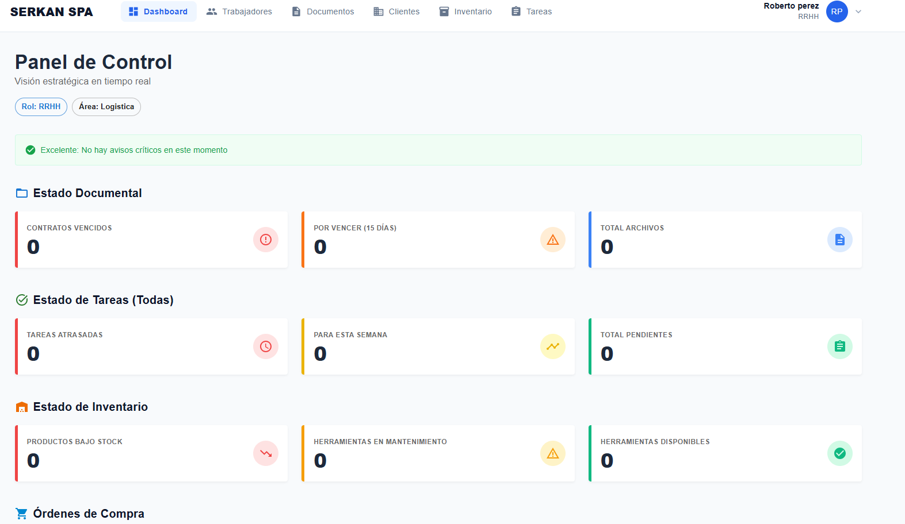

Sistema de Gestión Empresarial – Serkan Spa
Desarrollo de una plataforma web integral diseñada para optimizar la gestión interna de la empresa. El sistema permite administrar trabajadores, clientes, inventario, tareas operativas, eventos y documentación corporativa desde un entorno centralizado, mejorando la eficiencia y el control de la información.
Ver detalles